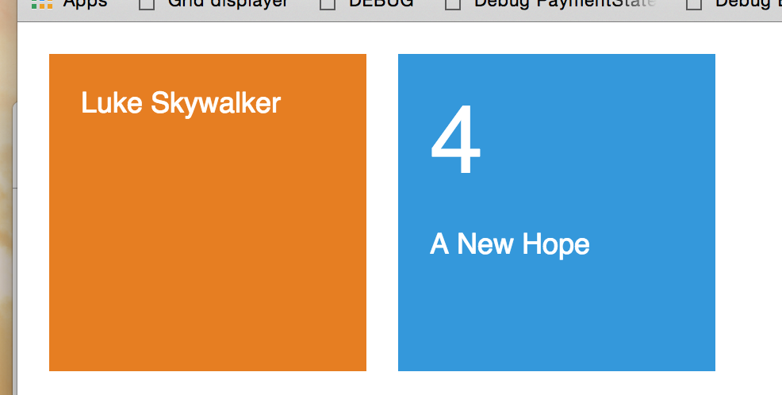

Learning Elm, part 3
This is part 3 of a series. Click here to read part 1 and part 2.
It's time for some interaction with APIs! Now we can say that we're building an actual web application, and we'll really be putting Elm to the test.
So, why not implement a Star Wars themed app?
Spec
The spec is simple: a Star Wars character "card" appears on the left, and corresponding film "cards", representing the films of the character, are shown on the right.
Clicking on a film "card" displays it on the left, and a list of the characters that appear in the film are shown on the right. And it goes on.

Characters cards will be yellow, and film cards will be blue. By clicking on a card, it changes from one screen to the other.
Film And Character Components
I'll build both the Character and Film components in separate files. This is the initial implementation:
-- Character.elm
type alias Model =
{ name : String
}
view model =
div [ mainStyle ]
[ div [ nameStyle ] [ text model.name ] ]
-- imports and styles omitted for brevity...-- Film.elm
type alias Model =
{ title : String
, episode_id : Int
}
view model =
let
chapter =
toString model.episode_id
in
div [ mainStyle ]
[ div [ numberStyle ]
[ text chapter ]
, div [ nameStyle ]
[ text model.title ]
]If these examples do not feel straightforward to you, refer back to Part 2.
To preview the views and fine tune the CSS, I'll create the Main.elm file and run Elm Reactor pointing to it:
main =
Html.App.beginnerProgram
{ model = model
, view = view
, update = update
}
update model =
model
sampleCh : Character.Model
sampleCh =
{ name = "Luke Skywalker"
}
sampleFilm : Film.Model
sampleFilm =
{ title = "A New Hope"
, episode_id = 4
}
model =
( sampleCh, sampleFilm )
view ( ch, film ) =
div []
[ Character.view ch
, Film.view film
]That should render a sample component of each. Now it's time to start modeling our application.

The Application Model
Our spec specifies two "application states": a character with a list of films, or a film with a list of characters. A natural model for this spec would be:
-- MODEL
-- Aliases added for reading simplicity
type alias C =
Character.Model
type alias F =
Film.Model
type Model
= FilmsFromCharacter C (List F)
| CharactersFromFilm F (List C)model =
FilmsFromCharacter sampleCh
[ sampleFilm
, sampleFilm
, sampleFilm
]view model =
case model of
FilmsFromCharacter c fs ->
div [ twoColumns ]
[ Character.view c
, div [] (List.map Film.view fs)
]
CharactersFromFilm f cs ->
div [ twoColumns ]
[ Film.view f
, div [] (List.map Character.view cs)
]
twoColumns =
style [ ( "display", "flex" ) ]main =
Html.App.program
{ init = ( model, Cmd.none )
, view = view
, update = update
, subscriptions = subscriptions
}
-- (...)
update msg model =
( model, Cmd.none )
-- (...)
subscriptions x =
Sub.noneSo, now instead of only a model, we have init. It is a tuple with a model to be rendered immediately and a command that will fire the update function in the future. Another thing to point out is that the update function also returns this same combination. Subscriptions are listeners that can also fire the update function.
Our next step is to build init. First, the app needs to get an initial character from the API and render it on the screen. Then, it has to render the films corresponding to that character. The http request will be the command, and I need an application state to wait for the request to complete.
A Key Takeaway: Elm architecture is designed in such a way that it showed me how I completely missed an important screen in my initial design of the page. At this point, it's clear to me that I need an initial loading screen :)
type Model
= InitialScreen
| FilmsFromCharacter C (List F)
| CharactersFromFilm F (List C)
(...)
view model =
case model of
InitialScreen ->
simpleMessage "Loading amazing characters and films..."
(...)
simpleMessage t =
div [ simpleMessageStyle ] [ text t ]The elm-http get function receives a "Decoder" and a url. The decoder is the function that will convert the json response to a character model. So it makes sense that it's inside the Character module, right?
Another thing that we realize at this point is that I'll have to have the list of the films the character was in! Of course. So let's change the model to also store the films' urls that'll be in the character card returned by the API:
-- Character.elm
import Json.Decode exposing (Decoder, succeed, string, list, int, (:=))
import Json.Decode.Extra exposing ((|:))
(...)
type alias Model =
{ name : String
, films : List String
}
characterDecoder : Decoder Model
characterDecoder =
succeed Model
|: ("name" := string)
|: ("films" := list string)import Http
(...)
getCharacter url =
Http.get Character.characterDecoder urlAs soon as we define the init as init = ( InitialScreen, getCharacter "http://swapi.co/api/people/1/" ) we'll receive the following message from the compiler:
The argument to function `program` is causing a mismatch. - Function `program` is expecting the argument to be:
{ init : ( Model, Cmd a )
(...)
But it is:
{ init : ( Model, Platform.Task Http.Error Character.Model )
(...)getCharacter url =
url
|> Http.get Character.characterDecoder
|> Task.perform FetchFail LoadFilmsNow the task will run, and it's going to return a Msg of type FetchFail Http.Error if it fails, or a LoadFilms Character.Model if it succeeds. These two types should be part of the Msg that is sent to the update function:
type Msg
= LoadFilms C
| FetchFail Http.ErrorWe also need to handle those two messages in our update function. Elm architecture, once more, reminds us that we haven't planned all the possible application states: we need an error state, and a "I have a character and I'm waiting for the films" state:
type Model
= InitialScreen
| ErrorScreen
| WaitingForFilms C
| FilmsFromCharacter C (List F)
| CharactersFromFilm F (List C)
type Msg
= LoadFilms C
| FetchFail Http.Error
update msg model =
case msg of
FetchFail _ ->
( ErrorScreen, Cmd.none )
LoadFilms c ->
( WaitingForFilms c, Cmd.none )
view model =
case model of
InitialScreen ->
simpleMessage "Loading amazing characters and films..."
ErrorScreen ->
simpleMessage "Sorry, there was an error. Please try again!"
WaitingForFilms c ->
div [ twoColumns ]
[ Character.view c
, simpleMessage "Loading Films..."
]
(...)Good Tools Nudge You in the Right Direction
I'd like to express once again how awesome Elm is to have pointed out that alternative application states were needed. I "naively" thought only two screens were needed, and in reality I needed five :)
The concept of a tool "nudging" you to better practices was first introduced to me in a Rich Hickey, inventor of Clojure, video (any video of him is well worth your time!).
This also led me to conclude that Javascript is always nudging us in the wrong direction. Rich Hickey, for example, made Clojure so that, if you are in a hurry, you can work with immutable variables. You have to go out of your way to mutate values using that tool, and that's good, because mutations are a big source of unnecessary complexity.
Compare that to Javascript: it's always easier to mutate everything, change variables outside the function scope, write functions that are impure... So that means that you are nudged towards application complexity when using Javascript!
Elm, on the other hand, is always nudging me towards writing good code. I feel not only that I'm writing code in a clean way, as I do with Clojure, but I'm also building the whole application in a clean and complete way. I feel I'm building every view necessary for every state the application will be in, and every error will be properly treated.
That's an awesome feeling. :)
Almost Finishing Our Application...
We are almost there! First of all let's implement the function that, given a character, it gets all the corresponding films.
Important: We'll use the Task.sequence to batch all the tasks, but this is definitely not the best way to do it; these requests could and should be parallel. I invite you to suggest a better way to do it in the comments!
-- Film.elm
type alias Model =
{ title : String
, episode_id : Int
, characters : List String
}
filmDecoder : Decoder Model
filmDecoder =
succeed Model
|: ("title" := string)
|: ("episode_id" := int)
|: ("characters" := list string)-- Main.elm
type Msg
= LoadFilms C
| FetchFail Http.Error
| ToFilmsFromCharacter C (List F)
update msg model =
case msg of
(...)
LoadFilms c ->
( WaitingForFilms c, getFilmsFromCharacter c )
ToFilmsFromCharacter c fs ->
( FilmsFromCharacter c fs, Cmd.none )
(...)There's only one detail missing from our components: they need to produce a message when clicked. I implemented it so each component would send a message with its model, so the update function would be able to use the list of films' or characters' urls:
-- Character.elm
import Html.Events exposing (onClick)
(...)
view : Model -> Html.Html Model
view model =
div
[ onClick model
, mainStyle
]
[ div [ nameStyle ] [ text model.name ] ]The type signature leaves it very clear: our view receives a Model, and returns an Html that produces messages of type Model. Good.
Now, when we use those views in our Main view, we need to add information to them in order to produce a valid message. For instance, if we click a character, it will send a message of type Character.Model (or C). But our application will only understand a message of type LoadFilms C. So we need to call the Character view function and map the message it sends with the LoadFilms tag. It's easier to demonstrate than to explain:
msgMap =
Html.App.map
view model =
case model of
(...)
WaitingForFilms c ->
div [ twoColumns ]
[ msgMap LoadFilms (Character.view c)
, simpleMessage "Loading Films..."
]
FilmsFromCharacter c fs ->
let
filmsViews =
fs
|> List.map Film.view
|> List.map (msgMap LoadCharacters)
in
div [ twoColumns ]
[ msgMap LoadFilms (Character.view c)
, div [] filmsViews
]
(...)From now on, it's a "complete the puzzle" game. Just fill in the blanks asked by the compiler one by one, and the application will be ready and working.
Next Steps
I can see two clear next steps for the app: making the requests parallel, and using animations for the transitions between the application states. As I said before, any ideas are welcome.
Conclusions
Elm is awesome. The fact that the compiler asks you to take care of the union types in a pattern match, makes it very difficult to forget something. Actually, after compiling the code, the application worked perfectly on the first shot. I was looking for reliability, and I found it!
There's a new component that I was not aware of before, that became clearer with this new exercise: the psychological impact of a strong compiler. Whenever your code is not compilable, solving issues feels like solving puzzles, and actually building something And, every time it compiles and we refresh the Elm Reactor window, we see something working.
With Javascript I feel like things are always breaking and I have to fi them little by little. Runtime errors generate frustration, and even when we solve them, they still bring thoughts like did I really stop it from breaking? Will it break in production in some unexpected way? Did I really deal with all the possible cases?
Of course this is a personal observation, but I felt I should note it in case it resonates with other people facing the same struggles.
So, that was Part 3. Feel free to post any questions you might have!